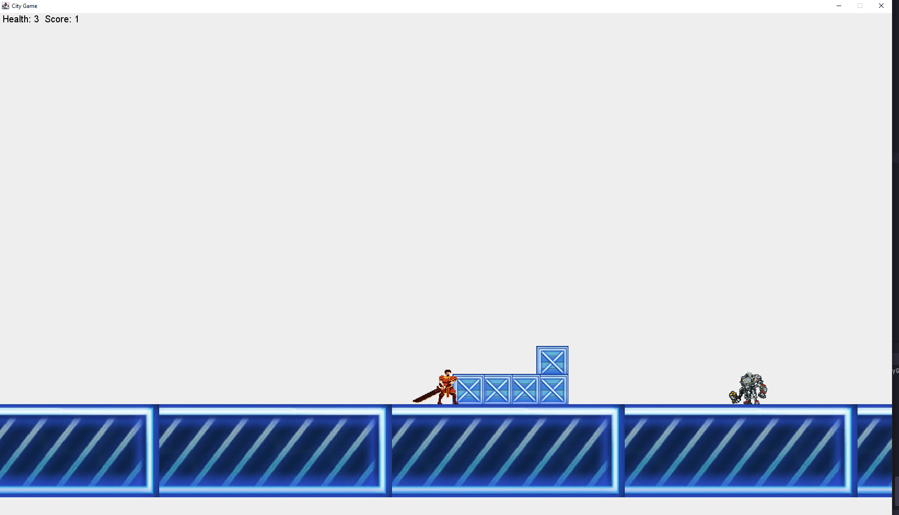

Tron Runner by DemetriThe idea of the game is simple, it involves a player trying to traverse multiple level in order to get to the end of the game. Across the levels the enemies will get harder and harder and so will the obstacles that are encountered. The game has music that plays throughout the game and when collision are made with enemies your player makes a hurt noise. The player moves onto the next level by collecting the coin at the end of the level and will finish game by getting to the end of 3 levels. The game has Gui which lets you increase and decrease the speed of the character and exit game. Finally, the characters score and health is displayed in top left and hitting 3 enemies will kill you. |
 | |
|
|
||
Controls, Features and Issues1 is to start moving and space is to jump. You can press ESC to open the GUI. The GUI allows you to speed up and slow down the character which is useful for making the game harder or easier. You can press 1 to apply the speed changes during a level. A general issue i faced was grasping the concept of getters and setters and passing private variables though classes via parameters. This is because im used to using file headers to access functions. In the end this became something i learned well. Another issue was implementing the AI movement. This had to be removed from source because movement would only happen off the frame for some reason. Some improvements which could have been implemented are animated AI and game loading. A pretty big missed opportunity was the saving of high scored which would have been a good game feature. | ||